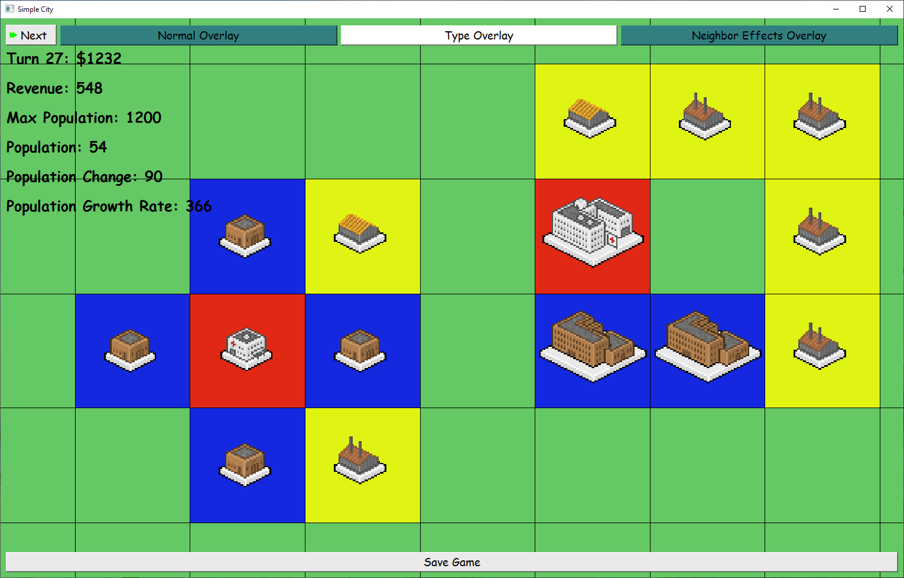

COMP 2012H Honors Object-Oriented Programming and Data Structures
Assignment 4 SimpleCity GUI
Announcements
- Updated November 10: The skeleton code and description were updated to better guide you to complete handling the side menu animation. If you have already completed this part, you do not need to download the skeleton again.
-
Updated November 9: If you are using Qt version 5.12.11 (or older),
menuwindow.cppmay not compile. To fix this, change lines 17-19 ofmenuwindow.cppfrom
toQPixmap p = ui->label_logo->pixmap(Qt::ReturnByValue); const int SCALE = 4; ui->label_logo->setPixmap(p.scaled(p.width() * SCALE, p.height() * SCALE));const QPixmap *p = ui->label_logo->pixmap(); const int SCALE = 4; ui->label_logo->setPixmap(p->scaled(p->width() * SCALE, p->height() * SCALE)); - Updated November 8: Skeleton code was released.
Honor Code
We value academic integrity very highly. Please read the Honor Code section on our course webpage to make sure you understand what is considered as plagiarism and what the penalties are. The following are some of the highlights:
- Do NOT try your "luck" - we use sophisticated plagiarism detection software to find cheaters. We also review codes for potential cases manually.
- The penalty (for BOTH the copier and the copiee) is not just getting a zero in your assignment. Please read the Honor Code thoroughly.
- Serious offenders will fail the course immediately, and there will be additional disciplinary actions from the department and university, upto and including expulsion.
Objectives & Intended Learning Outcomes
The objective of this assignment is to provide you with practice on the OOP concepts of Inheritance and Polymorphism, as well as writing code with less reliance on a provided skeleton code. Upon completion of this assignment, you should be able to:
- Write appropriate header files on your own, without being provided them as part of the skeleton code.
- Manage dynamic memory effectively with the use of class constructors and destructors.
- Use inheritance to allow for significant code reuse between base classes and derived classes.
- Use function overriding in derived classes to provide different function implementations for the same member function prototype.
- Understand how base class pointers/references can point/refer to derived class objects, yet polymorphically call derived class functions that are declared
virtual. - Code a program following the OOP paradigm.
- Have an overview of Qt GUI programming.
- Learning to use new library by searching the document.
Introduction
In this (last) assignment, you are going to implement the graphical user interface (GUI) for SimpleCity.
Since Qt is not taught in the lectures, you are expected to self-learn Qt. Here are some useful resources:
- Qt for Beginners (Tutorial)
https://wiki.qt.io/Qt_for_Beginners - Qt Examples (Examples)
https://doc.qt.io/qt-5/all-examples.html - Learn Qt 5 (E-book)
https://www.oreilly.com/library/view/learn-qt-5/9781788478854/?ar
Code Structure
pa4
├── City.cpp
├── City.h
├── SimpleCity.pro
├── buildings/
│ ├── Apartment.cpp
│ ├── Apartment.h
│ ├── Building.cpp
│ ├── Building.h
│ ├── BuildingInformationFormatString.h
│ ├── Clinic.cpp
│ ├── Clinic.h
│ ├── GoldMine.cpp
│ ├── GoldMine.h
│ ├── Health.cpp
│ ├── Health.h
│ ├── Hospital.cpp
│ ├── Hospital.h
│ ├── House.cpp
│ ├── House.h
│ ├── Residential.cpp
│ ├── Residential.h
│ ├── Revenue.cpp
│ ├── Revenue.h
│ ├── SilverMine.cpp
│ └── SilverMine.h
├── graphics.cpp
├── graphics.h
├── images/
│ ├── apartment.png
│ ├── clinic.png
│ ├── destruct.png
│ ├── gold_mine.png
│ ├── hospital.png
│ ├── house.png
│ ├── navigation.png
│ ├── next.png
│ ├── silver_mine.png
│ └── stripes.png
├── images.qrc
├── main_gui.cpp
├── mainwindow.cpp
├── mainwindow.h
├── mainwindow.ui
├── menuwindow.cpp
├── menuwindow.h
├── menuwindow.ui
└── test-city.txt
SimpleCity.pro: The Qt Creator project file for SimpleCity. Open this in Qt Creator.City.cpp,City.hand files inbuildings/: Provided files implementing the game logic. These are also the files you worked on in PA3. No need to modify these files.- Files in
images/andimages.qrc: Image files used in the application and the corresponding Qt Resource Collection Files. No need to modify these files. main_gui.cpp: Themain()function. No need to modify this file.mainwindow.cpp,mainwindow.handmainwindow.ui: Files implementing the main window. You may need to modifymainwindow.cppandmainwindow.h.menuwindow.cpp,menuwindow.handmenuwindow.ui: Files implementing the menu window. You may need to modifymenuwindow.cppandmenuwindow.h.graphics.cppandgraphics.h: Files implementing the game graphics. No need to modify these files.test-city.txt: Save file for testing.
However, since this assignment is graded in live demo, you are not constrained to follow our rules. You can do whatever you like to the code, as long as the application produces the expected results. (See Submission & Grading)
Part 1: Menu Window
When the application is started, the menu window appears. You only need to modify menuwindow.cpp and possibly menuwindow.h.
-
Load Game
When the "Load Game" button is clicked, open a dialog to prompt the player to choose a save file to load. If no file is chosen, for example, "Cancel" is clicked, or the dialog is closed, do nothing. If a file is chosen, then load the city from the file and start the game. The menu window is closed and the main window is started. Similar to PA3, you can assume the format of the save file is correct. -
New Game
When the "New Game" button is clicked, the UI is changed to prompt the player for the desired size of the city.
The current map size is shown in the label in the center. By default, the map size is 20. The left arrow button decreases the map size by 2, to a minimum of 10. The right arrow button increases the map size by 2, to a maximum of 30. When the "Start Game" button is clicked, create a new city with the specified map size and start the game. The menu window is closed and the main window is started.
-
Hints
-
Read
menuwindow.uito understand the UI elements of the menu window.- The grid size is displayed in
MenuWindow::ui->label_grid_size, which is aQLabel. - To switch UI after clicking the "New Game" button, you need to set something for
MenuWindow::ui->pages, which is aQStackedWidget.
- The grid size is displayed in
- You may use
QFileDialogto display the dialog for the player to choose a save file. - To start the game, you may use
MenuWindow::start_game(). Either create a new city or load a city from save, then pass the city pointer to this function.
-
Read
Part 2: Main Window
When the game is started, the main window is shown. Most functions regarding the game display has been already implemented in graphics.cpp and graphics.h, and you do not need to modify these files. You only need to modify mainwindow.cpp and possibly mainwindow.h.

-
Handling Next and Save Game Buttons
At the top, there is a "Next" button. When it is clicked, the game moves to the next turn. At the bottom, there is a "Save Game" button. When it is clicked, open a dialog to prompt the player to choose a file to save. If no file is chosen, for example, "Cancel" is clicked, or the dialog is closed, do nothing. -
Handling Overlay Buttons
At the top, there are 3 buttons that control the display of overlay: "Normal Overlay", "Type Overlay" and "Neighbor Effects Overlay". The display of overlay has already been implemented in
graphics.cppandgraphics.h.By default, "Normal Overlay" is chosen. When "Type Overlay" is chosen, the buildings are highlighted according to their types (Health, Revenue or Residential):
When "Neighbor Effects Overlay" is chosen, lines are shown to indicate neighboring effects between buildings:
You need to configure the behaviors of the overlay buttons:
-
Complete the method
MainWindow::initialize_overlay_buttons(), which is called in theMainWindowconstructor. You should set the style sheet of the overlay buttons, such that the selected overlay type is white, while others are blue. By default, the "Normal Overlay" button is selected.- You may use
QButton::setStyleSheet()and make use of the stringsBTN_SELECTED_STYLEandBTN_RELEASED_STYLE.
- You may use
-
Set the actions of the overlay buttons. When an overlay button is clicked, it calls
MainWindow::on_overlay_button_clicked()with the corresponding value of the enum classOverlayButton. For example,- When the "Normal Overlay" button is clicked, it calls
MainWindow::on_overlay_button_clicked(OverlayButton::NORMAL).
- When the "Normal Overlay" button is clicked, it calls
-
Complete the method
MainWindow::on_overlay_button_clicked().- Set the style sheet of the overlay buttons, such that the selected overlay type is white, while others are blue.
- Set the member variable
MainWindow::selected_overlay_buttonto the selected overlay button. This is accessed by the code ingraphics.cppto display the overlay.
-
Complete the method
-
Handling Side Menu Animation
The side menu on the right are hidden by default. It only shows up when the mouse is around the right window edge. Detection of mouse cursor location is handled by the code ingraphics.cpp, which sets the member variableMainWindow::side_menu_status. You need to complete the code inMainWindow::main_loop(), which is called 50 times per second to perform the animation. In particular, you need to complete two cases in the switch statement (Updated November 10):- In
HIDDEN_TO_VISIBLEcase, decrease the x-coordinate ofMainWindow::ui->side_menu_moveby fixed steps (e.g. 10), to a minimum of 0. Once 0 (or less) is reached, setMainWindow::side_menu_statustoVISIBLE. - In
VISIBLE_TO_HIDDENcase, increase the x-coordinate ofMainWindow::ui->side_menu_moveby fixed steps (e.g. 10), to a maximum of 400. Once 400 (or greater) is reached, setMainWindow::side_menu_statustoHIDDEN, and set the maximum width ofMainWindow::ui->side_menu_moveto 0.
-
It is helpful to add debug statements to visualize the change of side menu status:
switch (side_menu_status) { case SideMenuStatus::HIDDEN: qDebug("Hidden"); break; case SideMenuStatus::HIDDEN_TO_VISIBLE: qDebug("Hidden -> Visible"); break; case SideMenuStatus::VISIBLE: qDebug("Visible"); break; case SideMenuStatus::VISIBLE_TO_HIDDEN: qDebug("Visible -> Hidden"); break; } - In the
HIDDEN_TO_VISIBLEstate, the side menu should be appearing. When it has appeared, move to theVISIBLEstate. - In the
VISIBLE_TO_HIDDEDstate, the side menu should be disappearing. When it has disappeared, move to theHIDDENstate.
MainWindow::ui->side_menuis the parent widget forMainWindow::ui->side_menu_move. We set its maximum width to control whether the widget and the side menu can be displayed. If the maximum width is not set, thenMainWindow::ui->side_menualways block mouse cursor in front of the grid.
- In
-
Handling Side Menu Buttons
You need to configure the behaviors of the side menu buttons:-
Complete the method
MainWindow::initialize_side_menu_buttons(), which is called in theMainWindowconstructor. You should set the style sheet of the side menu buttons, such that the selected button is white, while others are blue. By default, the "Navigate" button is selected.- You may use
QButton::setStyleSheet()and make use of of the stringsBTN_SELECTED_STYLEandBTN_RELEASED_STYLE.
- You may use
-
Set the actions of the side menu buttons. When a side menu button is clicked, it calls
MainWindow::on_side_menu_button_clicked()with the corresponding value of the enum classSideMenuButton. For example,- When the "Clinic" button is clicked, it calls
MainWindow::on_side_menu_button_clicked(SideMenuButton::CLINIC).
- When the "Clinic" button is clicked, it calls
-
Complete the method
MainWindow::on_side_menu_button_clicked().- Set the style sheet of the side menu buttons, such that the selected button is white, while others are blue.
- If the selected button is a building type, also check whether the city has enough budget to construct that type of building. If not, change the selected button to "Navigate".
- Set the member variable
MainWindow::selected_side_menu_buttonto the selected side menu button. This is accessed by the code ingraphics.cpp.
-
Complete the method
-
Hints
-
Read
mainwindow.uito understand the UI elements of the main window. - You may use
QFileDialogto display the dialog for the player to choose a save file.
-
Read
-
Other Implemented Functions
The city map can be zoomed in and out by scrolling the mouse wheel. The city map can be moved by pressing WASD keys. These functions are implemented ingraphics.cpp.
Compilation
Resources
- Skeleton code (Updated November 10): pa4.zip.
- Demo program (executable for Windows): simplecity_gui_demo_windows.exe
-
Demo program (executable for MacOS): simplecity_gui_demo_mac.zip
- In Finder, right click on the demo program while holding Control. Select Open. Click Open.
Submission & Grading
Deadline: 20 November 2021 Saturday HKT 23:59.
You may earn 8% course grade for each PA. Since ZINC does not (yet) support grading assignments with GUI, you need to submit the source files to Canvas, and then perform live demo.
Files to Submit
Compress all source code as pa4_[student-id].zip and submit to Canvas.
Late Submission Policy
There will be a penalty of -1 point (out of a maximum 100 points) for every minute you are late. For instance, since the deadline is 23:59:00 on 20 November 2021, if you submit your solution at 1:00:00 on 21 November 2021, there will be a penalty of -61 points for your assignment. However, the lowest grade you may get from an assignment is zero: any negative score after the deduction due to late penalty (and any other penalties) will be reset to zero.
Live Demo
Live demo of your work will be held in Week 12-13. You will be demonstrating your work in a 1-to-1 session with a TA. You will be asked to download your submission from Canvas, compile it in Qt Creator and run it by following a series of steps. The TA will grade you work by checking whether the behavior matches the expected behavior. The schedule of the live demo will be announced later.
Grading Scheme
In the live demo, the TA will ask you to follow the below steps sequentially. The TA may ask you to do some specific actions in order to check the behavior of your program. If your program crashed in the middle, you are given another two chances to retry. The latest run is graded. No partial credits are given in each step.
- [5 points] Your program can be compiled. Starting the program shows the menu window.
- [4 points] When "Load Game" is clicked, a file dialog is shown.
- [1 points] When the file dialog is closed, the menu window does not go away.
- [5 points] When "New Game" is clicked, map size selection is shown.
- [5 points] Both increase and decrease size button work. The map size can be increased and decreased within the range 10-30, taking on even values only.
- [5 points] Set the map size to 10 and click on "Start Game". The main window is shown with a city with 10x10 grid.
- [5 points] Close the window and start over with map size of 12. The main window is shown with a city with 12x12 grid.
- [5 points] The city map can be moved an resized by WASD keys and scrolling the mouse wheel.
- [5 points] Move the mouse cursor close to the right window edge. The side menu slides to appear with an animation.
- [5 points] Move the mouse cursor away from the right window edge. The side menu slides to disappear with an animation.
- [5 points] Open the side menu. "Hospital", "Gold Mine" and "Apartment" buttons cannot be selected. "Navigate" button is selected instead due to insufficient budget. On the other hand, "Clinic", "Silver Mine" and "House" can be selected.
- [1 points] Construct a single house on the map.
- [2 points] Move the mouse cursor close to the right window edge to show the side menu. "House" button is still selected.
- [2 points] Construct a single clinic and silver mine next to the house.
- [2 points] Move the mouse cursor close to the right window edge to show the side menu. "Navigate" button is selected due to insufficient budget.
- [1 points] Press the "Next" button for 9 times. The city is on turn 10 with budget $322.
- [2 points] "Apartment" buttons can be selected in the side menu.
- [2 points] But "Gold Mine" and "Hospital" button cannot be selected in the side menu due to insufficient budget. Selection is change to "Navigate".
- [3 points] Left click on one of the buildings on the grid. A message box showing information of the building pops up.
- [1 points] Construct a silver mine anywhere on the map.
- [2 points] Open the side menu. "Apartment" button cannot be selected. "Navigate" button is selected due to insufficient budget.
- [7 points] Advance for a few turns such that each type of building can be built on the map and the budget exceeds $1000.
- [2 points] Select "Remove" in the side menu and destruct one building.
- [1 points] Select "Navigate" to revert back into navigation mode.
-
[7 points] Cycle through the overlay buttons, each mode of overlay should be correctly shown.
- Note: If you have mistakenly deleted a building in the previous step, so that no neighboring effects are present, you can use the stored $1000 to build a house next to a clinic to see if the neighboring effects overlay is working.
- [5 points] Click "Save Game". A file dialog is shown. Save the city to a file.
- [5 points] Construct some more buildings and go to next turn.
- [5 points] Close the window and restart the program. Loads the save in the previous step. The previous state is loaded.
Memory Leak
In this assignment, we do not check for memory leak.
Acknowledgments
This assignment was originally proposed and designed by Yu Hei CHAU.
The images of the in-game buildings are created by pixel32 @ opengameart.org.
https://opengameart.org/content/pixel-city-municipal-buildings
Page maintained by
- Kelvin CHIU
- Email: kelvinchiu@cse.ust.hk
- Last Modified: